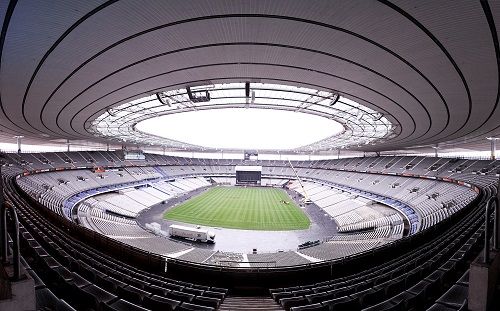

J-3 : le Stade de France en effervescence

A moins de 3 jours du début de la compétition, le Stade de France s'est transformé en véritable foumillière, où chacun s'agite pour que tout soit parfait.
Notre envoyé spécial, Jean Valjean s'est rendu sur place, et vous dévoile les coulisses de la compétition qui s'annonce.